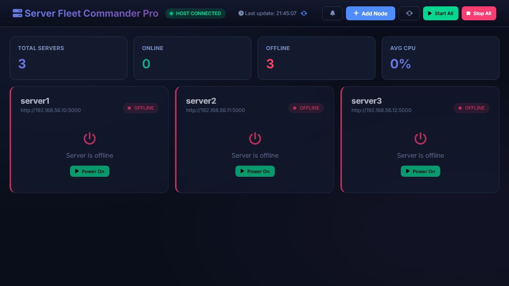
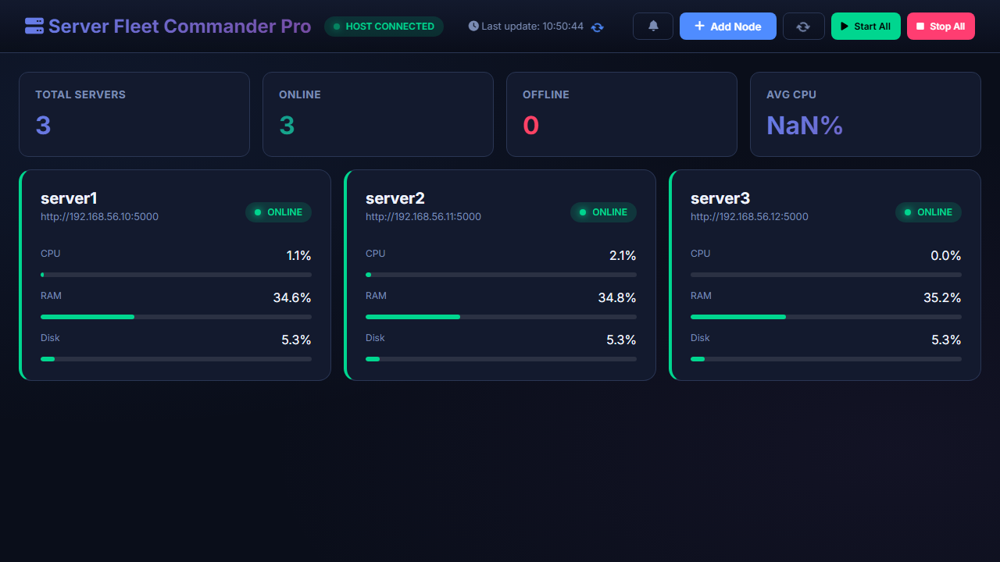

Control Servidores
Proceso de Resolución: Server Fleet Commander
1. Identificación de Componentes Principales
A continuación se identifican los ficheros clave que implementan la lógica de la aplicación:
Backend de Node (Servidores Monitorizados)
Fichero: server.py
- Función: Agente ligero que se ejecuta en cada servidor (o VM).
- Lógica Clave:
- Endpoints API REST (
/api/status,/api/hardware) usando Flask. - Extracción de métricas del sistema con la librería
psutil. - Ejecución de comandos administrativos (
reboot,shutdown) protegidos.
- Endpoints API REST (
Controlador Host (Orquestador)
Fichero: host_controller.py
- Función: Middleware que se ejecuta en la máquina anfitriona (Windows).
- Lógica Clave:
- Interacción con Vagrant/VirtualBox mediante subprocesos.
- Gestión del ciclo de vida de las VMs (Start/Stop/Snapshot).
- Gestión de tareas asíncronas para evitar bloqueos en la UI.
Frontend (Interfaz de Usuario)
Ficheros: index.html, styles.css
- Función: Dashboard interactivo SPA (Single Page Application).
- Lógica Clave:
- Framework reactivo Vue.js 3 (Composition API).
- Actualización en tiempo real mediante polling inteligente (ciclos rápidos para métricas, lentos para estado).
- Visualización de datos con Chart.js.
- Diseño profesional oscuro con CSS Grid y Flexbox.
2. Historial de Prompts e Integración de IA
Registro cronológico de las interacciones para construir la solución.
Fase 1: Infraestructura Base
Resultado: Detección de VirtualBox, instalación de Vagrant, creación del Vagrantfile inicial con 3 nodos Ubuntu.

Fase 2: Conectividad y Frontend Básico
Resultado: Eliminación de auth simple, configuración de IPs estáticas en red privada (192.168.56.x), conexión exitosa entre host y guests.

Fase 3: Control Remoto
Resultado: Desarrollo del host_controller.py para puentear comandos desde la web hacia Vagrant CLI en el host.
Fase 4: Profesionalización (La "Entrega Pro")
Resultado:
- Rediseño total UI/UX (Glassmorphism, Dark Mode).
- Sistemas de Alertas, Terminal Web, Gestión de Procesos, Snapshots.
- Arquitectura robusta de manejo de errores.

Fase 5: Documentación Final
Resultado: Generación de este reporte y página de entrega. Verificación final de todos los requisitos.
Fase 6: Estabilización Definitiva (One-Click)
Resultado:
- Refactorización Crítica: Separación de bucles de actualización (3s vs 15s) para eliminar conflictos de datos.
- Corrección de Bugs: Solución al crash de Vue (ReferenceError) y problemas de compatibilidad (AbortSignal).
- Backend Robusto: Uso de rutas absolutas para comandos de sistema (
/sbin/reboot) garantizando la ejecución como servicio. - Start Commander: Script
start_commander.batque automatiza el encendido de VMs, el host controller y la apertura del navegador en un solo clic.
Fase 7: Refinamiento y Estabilidad (Corrección de Bugs)
Resultado:
- Estabilización de Conexión: Se identificó que
vagrant statuses lento. Se aumentó el timeout del frontend de 3s a 15s y se implementó una caché de 5s en el backend para evitar saturación ("flapping"). - Detección Dinámica de Rutas: Se eliminó la ruta "hardcoded" de Vagrant, implementando una búsqueda inteligente del ejecutable en el sistema (PATH y rutas comunes).
- Manejo de Errores Robusto: Mejora en la lógica de
refreshFleetpara no marcar el host como desconectado por fallos puntuales de timeout.
3. Tecnologías Utilizadas
- Virtualización: VirtualBox + Vagrant
- Backend Nodos: Python + Flask + Psutil
- Backend Host: Python + Flask + Subprocess
- Frontend: HTML5 + CSS3 + Vue.js 3 + Chart.js
Análisis de Código
Agente de Monitoreo server.py
Este script reside dentro de cada Máquina Virtual. Su función es exponer el estado interno del sistema operativo (Linux) a través de una API HTTP.
1. Estrategia de Conexión de Red
Una de las partes más críticas es determinar la IP local correcta, especialmente en entornos con múltiples interfaces de red (Docker, VirtualBox, WiFi). Aquí se usa un truco con sockets UDP.
@app.route('/api/network', methods=['GET'])
def get_network():
try:
# IPs: Truco para obtener la IP que sale a Internet
local_ip = "N/A"
try:
import socket
# Creamos un socket UDP (no establece conexión real, es muy rápido)
s = socket.socket(socket.AF_INET, socket.SOCK_DGRAM)
# "Conectamos" a una IP pública conocida (Google DNS)
s.connect(("8.8.8.8", 80))
# El sistema operativo nos dice qué IP local usaría para esa ruta
local_ip = s.getsockname()[0]
s.close()
except:
local_ip = "127.0.0.1" # Fallback a localhost si no hay red¿Por qué UDP 8.8.8.8?
Usar socket.gethostbyname(socket.gethostname()) suele devolver 127.0.0.1 en muchos sistemas Linux configurados por defecto en Vagrant. Al crear un socket UDP hacia una IP externa, forzamos al Kernel de Linux a consultar su tabla de enrutamiento y seleccionar la interfaz de red principal.
2. Extracción de Métricas de Hardware
El endpoint /api/hardware es el corazón del monitoreo. Utiliza psutil para leer contadores del kernel.
@app.route('/api/hardware', methods=['GET'])
def get_hardware():
try:
# CPU: Intervalo de 0.5s para calcular la diferencia de uso
# IMPORTANTE: Esto bloquea la request durante 0.5s
cpu_percent = psutil.cpu_percent(interval=0.5)
# RAM: Obtiene información de la memoria virtual
svmem = psutil.virtual_memory()
# Disco: Obtiene uso de la raíz (Linux '/') o C: (Windows)
disk_path = '/' if platform.system() != 'Windows' else 'C:\\'
disk_usage = psutil.disk_usage(disk_path)
return jsonify({
"cpu": {
"percent": cpu_percent,
"cores_logical": psutil.cpu_count(logical=True),
},
"ram": {
"total": get_size(svmem.total),
"used": get_size(svmem.used),
"percent": svmem.percent
}
})Controlador del Host host_controller.py
Este script se ejecuta en tu máquina Windows. Su trabajo no es monitorear el sistema operativo, sino orquestar VirtualBox a través de Vagrant.
1. Ejecución Asíncrona (Threading)
Vagrant es lento. Un vagrant up puede tardar minutos. Si hiciéramos esto en el hilo principal de Flask, la web se congelaría.
def run_vagrant_command(cmd, task_id=None):
# Definimos la función que correrá en segundo plano
def internal_run():
# Lock global: Vagrant no soporta bien comandos paralelos en la misma carpeta
with vagrant_lock:
try:
full_cmd = f"{VAGRANT_EXE} {cmd}"
# subprocess.run ejecuta el comando en la terminal real
result = subprocess.run(
full_cmd,
shell=True,
cwd=VAGRANT_DIR,
capture_output=True,
text=True
)
# Si hay task_id, guardamos el resultado en memoria global
if task_id:
pending_tasks[task_id] = {
"done": True,
"success": result.returncode == 0,
"output": result.stdout
}
except Exception as e:
pass
# Si recibimos un ID, lanzamos el hilo y retornamos "pending" inmediatamente
if task_id:
pending_tasks[task_id] = {"done": False, "cmd": cmd}
thread = threading.Thread(target=internal_run)
thread.daemon = True # El hilo muere si se cierra el servidor
thread.start()
return {"success": True, "status": "pending", "task_id": task_id}
# Si no hay ID, esperamos a que termine (ej: para 'vagrant status')
return internal_run()2. Parsing de Estado
Vagrant devuelve texto plano, no JSON. Tenemos que "leer" ese texto para entender qué pasa.
if "(virtualbox)" in line:
parts = line.split()
# Ejemplo de línea: "server1 running (virtualbox)"
vm_name = parts[0] # server1
state = parts[1] # running / poweroff
# Verificamos si hay alguna tarea pendiente para esta VM en nuestro sistema de hilos
is_pending = False
for tid, t in pending_tasks.items():
if not t["done"] and vm_name in t["cmd"]:
is_pending = tidDashboard Reactivo index.html Vue.js 3
La interfaz no es estática. Utiliza Vue.js para "reaccionar" a los cambios de datos.
1. Lógica de "Refresh" Dual
El frontend fusiona dos fuentes de verdad: El Host (infraestructura) y el Agente (aplicación).
const refreshFleet = async () => {
// 1. Preguntar al Host: ¿Vagrant dice que las máquinas están encendidas?
const hostRes = await fetch(`${HOST_URL}/api/vms`);
const vagrantData = await hostRes.json();
// 2. Para cada nodo configurado...
await Promise.all(fleet.value.map(async (node) => {
# Buscamos su estado en la respuesta de Vagrant
const vState = vagrantData.vms.find(v => v.name === node.name);
# Caso: Vagrant dice "running"
if (vState.state === 'running') {
try {
# INTENTO DE CONEXIÓN AL AGENTE (Flask puerto 5000)
await fetch(`${node.url}/api/status`);
# Si conecta -> ONLINE (Verde)
node.online = true;
node.isBooting = false;
} catch {
# Si falla -> BOOTING (Azul / Spinner)
# Significa que la VM tiene energía pero el SO/Flask aún no carga
node.online = false;
node.isBooting = true;
}
} else {
# Vagrant dice "poweroff" -> OFFLINE (Gris/Rojo)
node.online = false;
}
}));
};Estados del Nodo
Esta lógica permite tener 3 estados visuales en lugar de 2:
- Offline: Vagrant dice
poweroff. - Booting: Vagrant dice
runningPERO elfetchal puerto 5000 falla. - Online: Vagrant dice
runningY elfetchal puerto 5000 responde 200 OK.
2. Ciclos de Actualización (Polling)
Para no saturar la red, usamos dos intervalos diferentes.
onMounted(() => {
// Loop Rápido (3 segundos)
// Solo pide métricas CPU/RAM a los nodos que YA sabemos que están online.
setInterval(() => {
if (view.value === 'fleet') updateMetricsOnly();
}, 3000);
// Loop Lento (15 segundos)
// Pregunta a Vagrant por el estado de las máquinas.
setInterval(() => {
checkHost();
refreshFleet();
}, 15000);
});